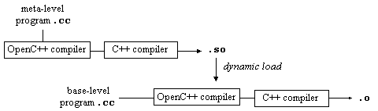

OpenC++ is a toolkit for C++ translators and analyzers. It was designed to enable the users to develop those tools without concerning tedious parts of the development such as the parser and the type system. There are a number of tools that OpenC++ facilitates the development of. For example, the users can easily develop a C++ translator for implementing a language extension to C++ or for optimizing the compilation of their class libraries. Moreover, OpenC++ is useful to develop a source-code analyzer such as one for producing the class-inheritance graph of a C++ program.
The programmer who want to use OpenC++ writes a meta-level program, which specifies how to translate or analyze a C++ program. It is written in C++ and defines a small number of classes. Then the meta-level program is compiled by the OpenC++ compiler and (dynamically or statically) linked to the compiler itself as a compiler plug-in. The resulting compiler translates or analyzes a source program (it is called a base-level program for distinction) as the meta-level program specifies.

The meta-level program is written according to the programming interface called the OpenC++ MOP (Metaobject Protocol.) Through this interface, the internal structure of the compiler is exposed to the programmers with object-oriented abstraction.
The base-level program is first preprocessed by the C++ preprocessor,
and then divided into small pieces of code. These pieces of code are
translated by class metaobjects and assembled again into a complete C++
program. In the OpenC++ MOP, the pieces of code is represented
by Ptree metaobjects in the form of parse tree (that is,
linked list). Although the metaobjects are identical
to regular C++ objects, they exist in the compiler and
represent a meta aspect of the base-level program. This
is why they are not simply
called objects but metaobjects.
The class metaobject is selected
according to the static type of the translated piece of code.
For example, if the piece of code is a member call on a Point object:
p0->move(3, 4)
Then it is translated by the class metaobject for Point (the type of p0.) It is given to the class
metaobject in the form of parse tree and translated, for example,
into this;
(++counter, p0->move(3, 4))
This translation is similar to the one by Lisp macros, but it is type-oriented. The translation by the metaobjects is applied not only a member call but also other kinds of code involved with the C++ class system, such as data member access and class declaration.
The programmer who wants to customize the source-to-source translation writes a meta-level program to define a new class metaobject. This class metaobject is associated with a particular class in the base-level program and controls the translation of the code involved with the class. Thus the translation is applied only to the particular class and the rest of the code involved with the other classes remains as is.
The class metaobject can use other aspects of the base-level program during the source-code translation. In addition to the parse tree, it can access the semantic information such as static types and class definitions. These various aspects of the program facilitates the implementation of complex source-code translation and analysis. Furthermore, the OpenC++ MOP enables syntax extensions so that the base-level programmers can write annotations to help the translation or the analysis.
The meta architecture of OpenC++ might look very different from the architecture of other reflective languages. However, note that the class metaobject still controls the behavior of the base-level objects, which are instances of the class. The uniqueness of the OpenC++ MOP is only that the class metaobject does not interpret the base-level program in the customized way, but rather translates that program at compile time so that the customized behavior is implemented. The readers will find that, as in other reflective languages, the class metaobject has a member function for every basic action of the object, such as member calls, data reading/writing, object creation, and so forth, for customizing the object behavior.